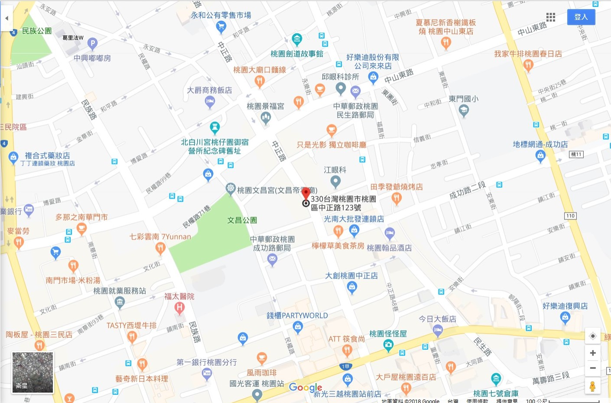

FUN FUN主題樂園座落於桃園蘆竹，無論乘坐大眾運輸工具、巴士、或自行駕車，十分方便
|
| ＞自行開車＞ |
＞台鐵/高鐵＞ |
＞巴士客運＞ |
| 自行開車 |
|

>點擊開啟Google Map
走國道三號(北二高)
- 開車南下或北上，請由43K南崁交流道下，沿指標行駛約4公里前往「FUN FUN主題樂園」。
走國道一號(中山高)
- 開車南下於52K機場系統交流道往國道二號往桃園鶯歌方向接國道三號南下，並從43K關西交流道下，沿指標行駛約4公里前往「FUN FUN主題樂園」。
- 開車北上於99新竹系統交流道接國道三號，往北從43K關西交流道下，沿指標行駛約4公里前往「FUN FUN主題樂園」。
※園區設有一般小客車及遊覽車停車場，供駕車賓客使用。
|
| 台鐵/高鐵 |
|
搭乘台鐵
- 可於台鐵中壢車站下車，並由前站出口至光南賣場前面，搭乘703公車，車程約40分鐘，在南崁站下車，即可抵達「FUN FUN主題樂園」。
- 703時刻表
搭乘高鐵
桃園高鐵站
- 2018/3/31起可於高鐵桃園站下車，並從車站大廳5號出口前往可運轉運站9號公車月台，轉搭乘FUN FUN主題樂園接駁公車(限假日行駛)；或車站大廳4 號出口搭乘計程車前往「FUN FUN主題樂園」。
- 2018/3/31至2019/1/1FUN FUN主題樂園接駁公車為免費搭乘。
- 桃園高鐵線上接駁車預約服務
|
| 巴士客運 |
|
國光客運1841(直達)
- 乘車路線：松山機場＞中山國小＞行天宮＞圓山飯店＞酒泉路口＞啟聰學校＞長榮＞南崁＞＞＞FUN FUN主題樂園
- 國光客運1841(直達)乘車資訊及時刻表
- 可使用投幣或悠遊卡付費。
國光客運1861(需走路10分鐘)
- 乘車路線：台中客運站、朝馬站＞長榮站＞走路10分鐘＞＞＞FUN FUN主題樂園
- 國光客運1861時刻表
|